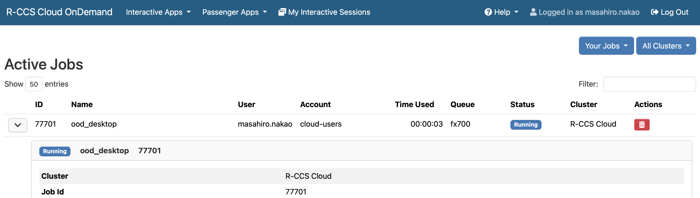

4. Open OnDemand

The above image shows the Open OnDemand dashboard of the R-CCS Cloud. The table on the right of the R-CCS Cloud logo shows the number of available nodes for each partition. The menu bar above the logo has the following meanings (depending on the browser width, some may appear as icons).
| Item | Description |
|---|---|
| Interactive Apps | Interactive applications running on compute nodes |
| Passenger Apps | Applications running on the Open OnDemand server |
| My Interactive Sessions | List of interactive application session information |
| Help → Restart Web Server | Restart Open OnDemand |
| Help → Manual | Link to this manual |
| Log Out | Log out |
4.1. Interactive Applications
Interactive applications are applications that allow users to interactively operate applications running on compute nodes. They are provided in the following categories: "development applications" and "visualization applications."
| Development Application | Description |
|---|---|
| Desktop | Lightweight desktop environment running on the X Window System: Xfce |
| JupyterLab | Interactive execution environment for programs running in a web browser |
| VSCode | Code editor developed by Microsoft |
| WHEEL | Web tool for interactively creating and running analysis jobs |
| Visualization Application | Description |
|---|---|
| Gnuplot | Command-line driven graphing program |
| GrADS | Visualization and analysis program for gridded data in meteorology and climate fields |
| ImageJ | Image processing software running on the Java Virtual Machine |
| OVITO | Visualization and analysis program for large datasets such as particle simulations |
| ParaView | Scientific and technical data visualization program |
| PyMOL | Visualization and analysis program for 3D structures of biomacromolecules |
| Smokeview | Visualization program for displaying results from FDS and CFAST |
| VESTA | Visualization program for crystal structures and 3D data such as electron/nuclear densities |
| VisIt | Visualization and analysis program supporting various scientific data formats |
| XCrySDen | Visualization program for crystal and molecular structures |
For example, to use the Desktop: click the "Desktop" in "Interactive Apps", a web form will appear to enter compute resources and other information. After entering the information, click "Launch" to submit a job to the R-CCS Cloud.

Immediately after job submission, a screen showing "Queued" will appear, meaning the job is waiting. When the job starts on a compute node, the display changes to "Running" and a "Launch Desktop" button appears. Set appropriate values for "Compression" and "Image Quality", then click "Launch Desktop" to open the Desktop in your browser.
Clicking the "View Only (Share-able Link)" button opens a mirrored desktop in a new tab. The mirrored screen cannot be operated. You can share the screen by sending the URL via email, but only among users who have an account on the R-CCS Cloud.

To terminate the desktop, do one of the following. Simply closing the browser will not terminate it:
- Click the "Delete" button (as shown in the second previous image).
- Click "My Interactive Sessions" in the menu bar and then click "Delete" for the relevant job.
- From "Applications" at the top left of the desktop, click "Log Out".
4.2. Passenger Application
Passenger applications are applications that run on the Open OnDemand server. We provide the following applications.
| Name | Description |
|---|---|
| Active Jobs | Monitoring Jobs |
| Home Directory | File Operations |
| Login Node | Terminal |
| SSH Public Key | Registering an SSH public key |
| Slurm | Creating and submitting a batch job |
| System Status | Check usage status |
4.2.1. Active Jobs
You can view and delete job information. Click the button left of "ID" to view details, and the "Actions" column button to cancel a job.
4.2.2. Home Directory
You can send, receive, and edit files. The maximum file size for transfer is 10GB.
The functions of the Home Directory are as follows. Operations on individual files or directories can be performed from the "three-dot + triangle" menu.
| Toolbar | Description |
|---|---|
| Open in Terminal | Launch terminal |
| Refresh | Reload the page |
| New File | Create a new file |
| New Directory | Create a new directory |
| Upload | Upload a file |
| Download | Download a file |
| Copy/Move | Copy or move files |
| Delete | Delete files or directories |
| Path Bar | Description |
|---|---|
| ↑ | Move up one directory |
| Change directory | Move to a specified directory |
| Copy path | Copy current path to clipboard |
| View Options | Description |
|---|---|
| Show Owner/Mode | Display owner and permissions |
| Show Dotfiles | Display hidden dotfiles |
| Filter | Filter by filename |
Clicking a path in "Passenger Apps" launches the Home Directory starting from that path.

File operations with cloud storage via Rclone are also supported.
To configure Rclone, start a Desktop, open a terminal, and run rclone or rclone-browser.
After configuration, click "Help → Restart Web Server" in Open OnDemand’s menu bar, then open the Home Directory to access the configured storage.
Note that the R-CCS Cloud Help Desk does not provide support for Rclone configuration.
4.2.3 Login Node
You can SSH into the login node via browser and operate with a command-line interface.

4.2.4. SSH Public Key
See 1.2. Using Terminal Software.
4.2.5. Slurm
You can create and submit batch jobs.
A batch job is a compute task executed non-interactively by the job scheduler.
Batch jobs are written as shell scripts, and required resources (e.g., number of nodes, maximum runtime) are specified with scheduler directives (e.g., #SBATCH -N 4).
In R-CCS Cloud Open OnDemand, the application Open Composer is provided, making it easy to submit and manage batch jobs.
At the top right, "Script Location" specifies where the script will be saved, "Script Name" is the filename, and "Job Name" is the job name (optional). At the bottom left are job input items; filling them updates the job script on the bottom right automatically. After entering, click "Submit" to submit the job to the R-CCS Cloud.

Once the job is successfully submitted, click the link to the "History page" shown at the top.

On the History page, you can view the history of submitted jobs. Each row shows information for one job. The "Cancel Job" button cancels a running job, and the "Delete Info" button removes job info from the table. To perform these actions, check the corresponding checkbox in the leftmost column.
The text area and radio buttons at the top right filter jobs displayed in the table. Entering a string in "Filter" shows only jobs related to that string. Radio buttons "All", "Running", "Queued", "Completed", and "Failed" filter jobs by status.

Clicking a link in the "Job ID" column displays profiling information retrieved from the scheduler.

Clicking a link in the "Application" column opens the application page.
Clicking a link in the "Script Location" column opens Open OnDemand’s Home Directory. Clicking the adjacent terminal icon opens Login Node.
Clicking a link in the "Script Name" column opens a window showing the submitted script. Clicking the "Load Parameters" button in that window opens the application page with the parameters preloaded.

4.2.6. System Status
You can view the usage status of each partition.